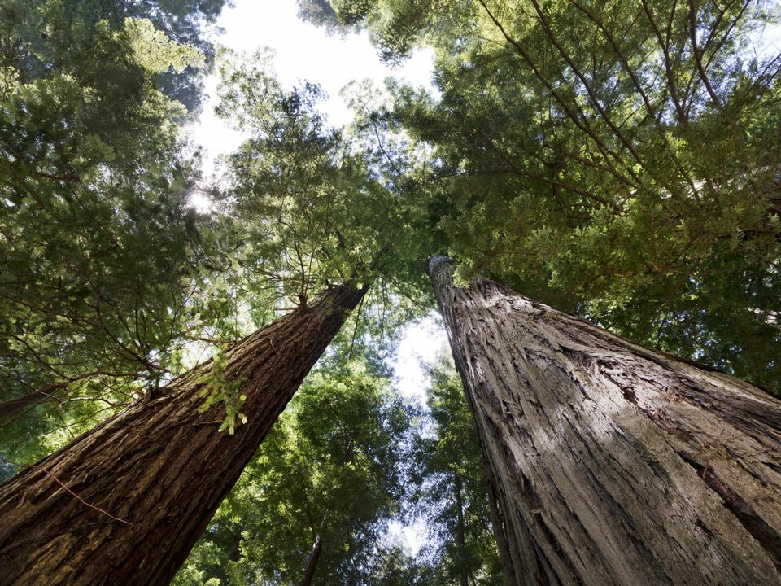

Old Town Eureka · Historic inns
Carter House Inns
Victorian inns with Restaurant 301.
Official details for Carter House InnsThe tallest trees on Earth.
California’s far north coast is redwood country, where coast redwoods more than 350 feet tall grow almost to the beach. Land at the California Redwood Coast–Humboldt County Airport near Arcata, stay at the Carter House in Victorian Old Town Eureka, walk the groves at Prairie Creek, look for Roosevelt elk in the meadows, and eat at a 19th-century lumber-camp cookhouse.

In our plane it’s a short flight.
Where we’re staying Dinner Things to do The plan
I’ll handle the flight planning; you handle the fun planning! Pilot view
Time illustration: direct distance at 150 KTAS plus 15 minutes for departure and arrival, matching the discovery page. Use ForeFlight for your actual flight plan.
Check the weekend weather at both ends → Flight category, your minimums and the crosswind on the best runway.
More in Aviation & getting around below. Crew cars change often: call the FBO before you go. How to have a rental car waiting at the FBO · Know something we missed? Tell us.
KACV, California Redwood Coast–Humboldt County, is a non-towered field at 222 feet with a 6,046-foot main runway north of Arcata, about 20 minutes from Eureka and 45 from Prairie Creek.
Humboldt County Airport, McKinleyville, CA
Fog is common; ACV is known for low ceilings. Plan an inland alternate such as Redding. Arrange a rental car. No live fuel price is shown.
Redwood coast weather: fog and low ceilings much of the year, especially summer mornings; Pacific storms in winter; rising terrain just inland. Plan an inland alternate. About 2180 nm from Myrtle Beach: two long days each way with several fuel stops. Plan a week, or overnight on the way out and back.
Rates and availability need travel dates. Summer books early.
Victorian inns with Restaurant 301.
Official details for Carter House InnsA 1915 hotel on the town plaza.
Official details for Hotel ArcataPrices and availability for your dates, through our partner Stay22. This is an affiliate link: we may earn a commission at no cost to you. The picks above are never paid.
Reserve weekend dinners.
Seasonal cooking and a deep wine list at the Carter House.
Official details for Restaurant 301Family-style meals in the last lumber-camp cookhouse in the West.
Official details for Samoa CookhouseMornings in the groves are magical in the fog.
Roosevelt elk, Fern Canyon and the Newton B. Drury Parkway.
California State ParksThis prototype links to the local visitor site. It does not yet match events to your travel dates.
Fewer fogs and warm days.
Visit Redwoods for Clearest weatherBugling Roosevelt elk at Prairie Creek.
California State Parks for Elk rutThe trees are good in any weather.
NPS for Redwood grovesCheck the local calendar when choosing a weekend, and confirm dates and tickets with the organizer.
A sample redwoods weekend. This is a two-day flight each way; plan a week. No bookings or availability confirmed.
Land at KACV once the fog lifts.
Prairie Creek redwoods and the elk meadows.
Old Town Eureka, then back to the airport.
Land at KACV, subject to weather and your actual flight plan.
Old Town Eureka.
Dinner at Restaurant 301.
Prairie Creek and the elk meadows.
Fern Canyon.
Dinner in Arcata.
Breakfast at the Samoa Cookhouse.
Return the car and allow time at the airport.
Fog can return quickly; leave when it lifts and keep an inland alternate.
Fern Canyon.
Trinidad's harbor and lighthouse.
Dinner at Restaurant 301.
These details make the difference between an appealing list and a usable getaway.
Lodging and a car first.
About 2,180 nm from Myrtle Beach: two long days each way.
Plan an inland alternate.
May to October.
Picks and links reviewed by WingAway Weekends. Hours, prices, menus and availability change often, so confirm directly with each place before booking. Spotted something out of date, or have a favorite we missed? Email us at hello@wingawayweekends.com.
WingAway Weekends helps you discover the destination. Use ForeFlight and current official aviation information for route, performance, weather, NOTAMs and preflight decisions. Flight planning and PIC responsibility stay with the pilot.